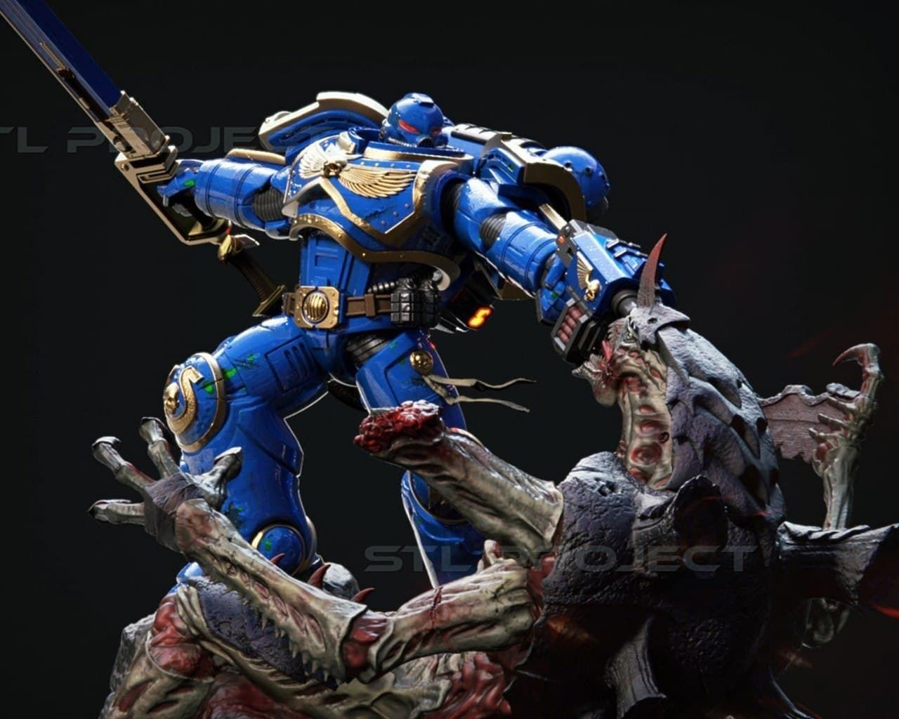

Space Marines
The Space Marines are genetically engineered super-soldiers equipped with the best armor and weapons. Some iconic models include:
- Intercessor Squad: A solid core troop choice with a balance of firepower and durability.
- Primaris Redemptor Dreadnought: A towering war machine, packing heavy firepower and crushing melee strength.
- Captain in Gravis Armor: A powerful commander with strong offensive and defensive capabilities.